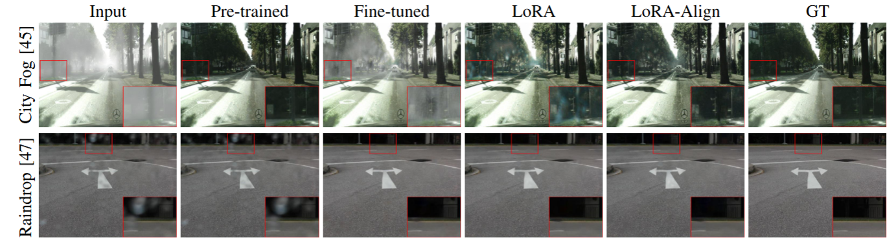
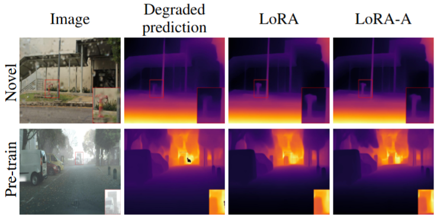

All-weather image restoration (AWIR) is crucial for reliable autonomous navigation under adverse weather conditions. AWIR models are trained to address a specific set of weather conditions such as fog, rain, and snow. But this causes them to often struggle with out-of-distribution (OoD) samples or unseen degradations which limits their effectiveness for real-world autonomous navigation. To overcome this issue, existing models must either be retrained or fine-tuned, both of which are inefficient and impractical, with retraining needing access to large datasets, and fine-tuning involving many parameters. In this paper, we propose using Low-Rank Adaptation (LoRA) to efficiently adapt a pre-trained all-weather model to novel weather restoration tasks. Furthermore, we observe that LoRA lowers the performance of the adapted model on the pre-trained restoration tasks. To address this issue, we introduce a LoRA-based fine-tuning method called LoRA-Align (LoRA-A) which seeks to align the singular vectors of the fine-tuned and pre-trained weight matrices using Singular Value Decomposition (SVD). This alignment helps preserve the model's knowledge of its original tasks while adapting it to unseen tasks. We show that images restored with LoRA and LoRA-A can be effectively used for computer vision tasks in autonomous navigation, such as semantic segmentation and depth estimation.
The AWIR model shown above is pre-trained for fog, rain and snow, for which it works well. However, it fails for the novel or unseen task of raindrop removal. The performance for raindrop removal improves significantly after parameter efficient adaptation using LoRA.
Quantitative comparisons of LoRA and LoRA-A with the pre-trained and fine-tuned versions of PromptIR and TransWeather for the novel task of raindrop removal.
Qualitative comparisons of fine-tuning, LoRA and LoRA-A for the novel task of raindrop removal using PromptIR pre-trained for defogging, deraining and desnowing. Results for one of the pre-training tasks (defogging) is also shown.
Predictions of Mask2Former on novel task of raindrop removal and pre-training task of defogging. After restoration using LoRA and LoRA-A, the results improve significantly. Furthermore, LoRA-A yields better segmentation results for the pre-training task of defogging.
Predictions of Depth-Anything on the novel task of raindrop removal and pre-training task of defogging. The predictions improve significantly after restoration using LoRA and LoRA-A. LoRA-A yields better depth results for the pre-training task of defogging.
@article{
}